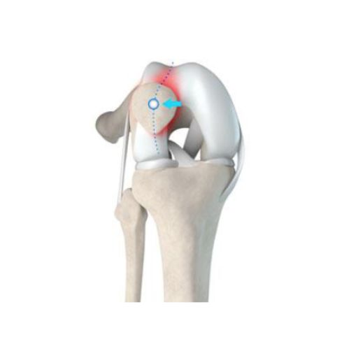

Home
Home
Desviación e Inestabilidad de la Rótula
¿Qué es la desviación e inestabilidad de la rótula?
La inestabilidad rotuliana ocurre cuando la rótula (patela) se desliza parcial (subluxación) o completamente (luxación) fuera de la tróclea femoral, la ranura natural en la que debe encajar durante el movimiento de la rodilla. La rótula desempeña un papel fundamental en la biomecánica de la rodilla, permitiendo un movimiento eficiente y una correcta distribución de cargas. Normalmente, los ligamentos y músculos estabilizadores mantienen la rótula alineada dentro de la tróclea. Sin embargo, cuando estas estructuras están debilitadas o dañadas, la rótula puede: 🔹 Desplazarse parcialmente (subluxación) 🔹 Desencajarse completamente de la tróclea (luxación) Con el tiempo, la repetición de estos episodios puede dañar aún más las estructuras blandas como ligamentos, cartílago y músculos, aumentando la inestabilidad y el dolor.

Síntomas de la Malalineación y la Inestabilidad Rotuliana
Los pacientes con inestabilidad rotuliana pueden presentar los siguientes síntomas: ✔ Dolor en la parte anterior de la rodilla – Particularmente al levantarse de una silla, subir o bajar escaleras y realizar movimientos de flexión-extensión. ✔ Sensación de inestabilidad – Sensación de que la rodilla puede "ceder" o perder estabilidad. ✔ Subluxaciones o luxaciones recurrentes – La rótula se desplaza con facilidad, especialmente durante actividades físicas. ✔ Deformidad visible – Después de una luxación, la rótula puede notarse fuera de lugar. ✔ Hinchazón y rigidez – Como resultado de la inflamación y el daño a los tejidos blandos. ✔ Reducción de la función de la rodilla – Dificultad para caminar largas distancias, correr o practicar deportes. Una detección y tratamiento tempranos son esenciales para prevenir un deterioro mayor y restaurar la estabilidad de la rodilla.
Causas y Factores de Riesgo de la Inestabilidad Rotuliana
Diversos factores pueden contribuir a la inestabilidad rotuliana, incluyendo alteraciones anatómicas y biomecánicas: 🔹 Alteraciones Anatómicas Variaciones congénitas en la forma de la rótula o la tróclea femoral. Pie plano (pes planus) – Modifica la alineación de la extremidad y aumenta la inestabilidad. 🔹 Alteraciones del Ángulo "Q" El ángulo Q mide la relación entre la cadera y la rodilla. Un ángulo Q elevado, frecuente en pacientes con genu valgo (rodillas en "X"), genera una mayor tracción lateral sobre la rótula, favoreciendo su malalineación. 🔹 Desequilibrios Musculares El cuádriceps, en especial el vasto medial oblicuo (VMO), es fundamental para mantener la rótula alineada. Debilidad o falta de coordinación en los músculos del muslo puede provocar desplazamientos anómalos de la rótula. 🔹 Laxitud Ligamentaria o Lesiones del MPFL El ligamento femoropatelar medial (MPFL) es la principal estructura que impide que la rótula se desplace lateralmente. Si este ligamento se rompe o se distiende, la rótula puede luxarse con facilidad incluso con movimientos mínimos. 🔹 Deformidades Rotacionales y Coronales
En algunos pacientes, la inestabilidad rotuliana es el resultado de anomalías estructurales en el fémur y la tibia, tales como:
✔ Anteversión femoral excesiva – Un giro interno anómalo del fémur, que afecta la alineación de la rótula. ✔ Torsión tibial externa – Rotación anómala de la tibia, que modifica la trayectoria natural de la rótula. ✔ Deformidades en el plano coronal – Especialmente genu valgo (rodillas en "X"), que aumenta la presión lateral sobre la rótula. En estos casos, pueden ser necesarias osteotomías rotacionales o coronales para corregir la alineación ósea y mejorar la estabilidad de la rodilla.
Diagnóstico de la Inestabilidad Rotuliana
El diagnóstico preciso es clave para planificar el tratamiento adecuado. El proceso diagnóstico incluye: ✔ Exploración clínica – Evaluación del tracking rotuliano, estabilidad ligamentaria y equilibrio muscular. ✔ Radiografías – Permiten analizar la posición de la rótula, la alineación ósea y la presencia de deformidades. ✔ Resonancia Magnética (RMN) – Evaluación detallada del MPFL, cartílago y estructuras blandas. ✔ Tomografía Computarizada (TC) con reconstrucción 3D – Indicada en pacientes con posibles deformidades rotacionales o displasia troclear.
Opciones de Tratamiento para la Inestabilidad Rotuliana
La estrategia de tratamiento se adapta a la gravedad del problema y las necesidades funcionales del paciente. 🔹 Tratamiento No Quirúrgico (Conservador) Para casos leves, el objetivo es mejorar la estabilidad y el control muscular mediante: ✔ Fisioterapia – Reforzando el cuádriceps y el VMO para optimizar el tracking rotuliano. ✔ Ortesis y plantillas personalizadas – Para mejorar la alineación del pie y la pierna. ✔ Tratamiento del dolor – Medicación antiinflamatoria o infiltraciones con PRP (Plasma Rico en Plaquetas) para reducir el dolor y la inflamación. ✔ Modificación de la actividad física – Evitando ejercicios de alto impacto hasta recuperar la estabilidad. Sin embargo, cuando la inestabilidad es severa o recurrente, se recomienda tratamiento quirúrgico. 🔹 Cirugía para la Inestabilidad Rotuliana El tratamiento quirúrgico tiene como objetivo corregir la alineación de la rótula y restaurar la estabilidad. Entre las técnicas más comunes se incluyen: 🔹 Reconstrucción del MPFL (Ligamento Femoropatelar Medial) Se realiza mediante un injerto de tendón para restaurar la función del ligamento dañado. 🔹 Osteotomía de la Tuberosidad Tibial (Tibial Tubercle Transposition – TTT) Corrige la posición de inserción del tendón rotuliano, mejorando la trayectoria de la rótula. Disminuye la tracción lateral sobre la rótula. 🔹 Trocleoplastia Indicada en pacientes con displasia troclear (tróclea femoral poco profunda o inexistente). Redefine la tróclea, proporcionando un surco más profundo para estabilizar la rótula. 🔹 Osteotomías Rotacionales (Femoral o Tibial) Osteotomía femoral para corregir excesiva anteversión del fémur. Osteotomía tibial para corregir rotaciones anómalas o deformidades en valgo.
Recuperación y Rehabilitación
El protocolo de recuperación es progresivo y personalizado, incluyendo: ✔ Fase 1 (0-6 semanas) – Movilización temprana con carga parcial. ✔ Fase 2 (6-12 semanas) – Fortalecimiento muscular y reeducación de la marcha. ✔ Fase 3 (3-6 meses) – Retorno a la actividad deportiva con ejercicios específicos. 📍 Ubicación: Hospiten Estepona, Costa del Sol 📩 Contacto: Reserva una consulta a través de la web o redes sociales. 🔹 Recupera la estabilidad de tu rodilla. Muévete con confianza. 🚀💪